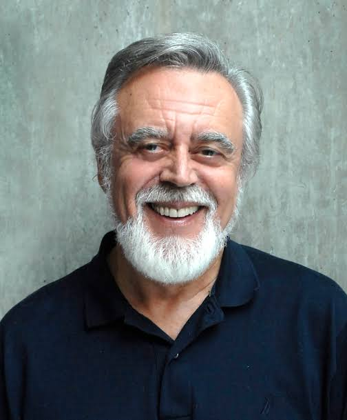
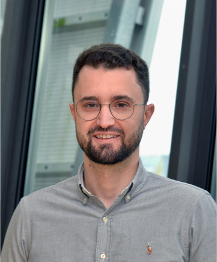
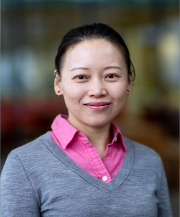
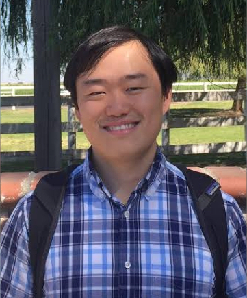

Speakers

Arizona State University
Dimitri Bertsekas is a distinguished computational scientist and Fulton Professor of Computational Decision Making at Arizona State University. Previously, he spent four decades at MIT (1979-2019), following earlier faculty positions at Stanford University and the University of Illinois, Urbana. He has authored twenty influential books and research monographs, including seminal works on dynamic programming, reinforcement learning, and convex optimization. He earned numerous prestigious awards, including the Khachiyan Prize for Life-Time Accomplishments in Optimization (2014).
Topic: Reinforcement Learning, Dynamic Programming, and Model Predictive Control.

RWTH Aachen University
Christopher Morris is an Assistant Professor at RWTH Aachen University, where he leads the Learning on Graphs (LoG) group and holds a DFG Emmy Noether Fellowship. His research focuses on graph representation learning and the intersection of machine learning with combinatorial optimization. Before RWTH, he was a postdoc at Mila - Quebec AI Institute and McGill University, after receiving his Ph.D. from TU Dortmund University.
Topic: The Connection between ILPs and MPNNs.

Eindhoven University of Technology
Yingqian Zhang is an Associate Professor in the Information Systems group at Eindhoven University of Technology (TU/e). She develops AI solutions for decision-making, focusing on combining machine learning and deep reinforcement learning with (trustworthy) data-driven optimization and socially aware algorithms. Her work is applied to real-world challenges in smart mobility, sustainable logistics, and the energy transition.
Topic: Application of GNNs and LLMs in Solving Real-World CO Problems.

Meta GenAI
Yuandong Tian is a Research Scientist Director in Meta GenAI, leading a group for Llama reasoning. His research direction covers multiple aspects of decision making, including reinforcement learning, planning and efficiency, as well as theoretical understanding of LLMs. Prior to that, he worked in Google Self-driving Car team in 2013-2014 and received a Ph.D in Robotics Institute, Carnegie Mellon University in 2013.
Topic: Advancing LLMs and Reasoning with Optimization.
Carnegie Mellon University
Yiming Yang is a Full Professor at Carnegie Mellon University (CMU), affiliated with both the Language Technologies Institute and the Machine Learning Department. Her research interests span large language models, multimodal foundation models, and generative AI for science. She has published over 400 papers, with multiple best paper awards at KDIR, SIGKDD, IJCAI, SCAMC and NCIP.
Topic: ML-Guided Sampling Methods for Combinatorial Optimization.

MIT
Cathy Wu is an Associate Professor at MIT in LIDS, CEE, and IDSS. She holds a PhD from UC Berkeley, and BS and MEng from MIT, all in EECS, and completed a Postdoc at Microsoft Research. Her research lies at the intersection of machine learning, control, and mobility. Her recent research focuses on how learning-enabled methods can better cope with the complexity, diversity, and scale of control and operations in mobility systems. She is broadly interested in developing principled computational tools to enable reliable decision-making in sociotechnical systems.
Topic: Learning-guided Optimization for Complex Systems.